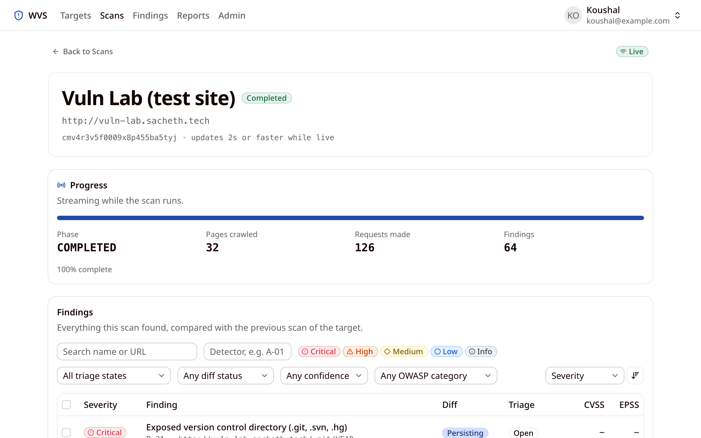
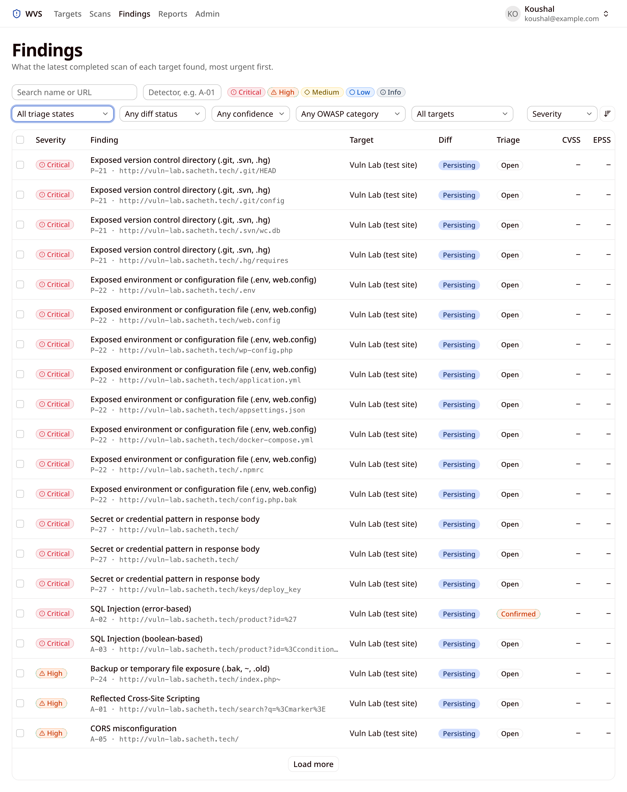
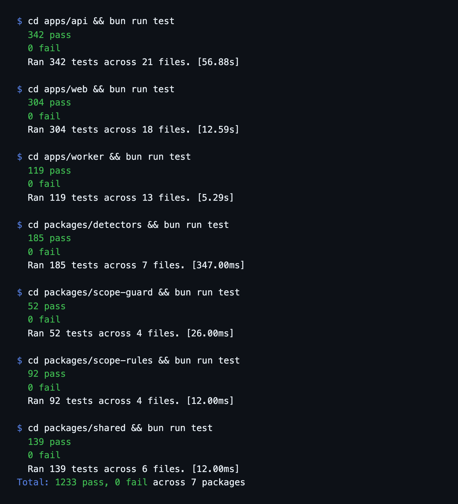

Measure how well WVS finds real weaknesses on a website it is allowed to scan, how long a scan takes, and whether the code behaves as specified.
vuln-lab, a deliberately weak test website (source in tools/vuln-lab), deployed at http://vuln-lab.sacheth.tech. Each weakness is planted for one or more detectors, as listed in tools/vuln-lab/README.md./logout was excluded from scope.cmv4r3v5f0009x8p455ba5tyj, run on October 12, 2026.| Severity | Findings |
|---|---|
| Critical | 17 |
| High | 8 |
| Medium | 20 |
| Low | 13 |
| Info | 6 |
| Total | 64 |
No detector raised an execution error during the scan.
| Detector(s) | Planted weakness | Found by the scan | Result |
|---|---|---|---|
P-01, P-03..P-06, A-06 | No security headers on any HTML page | P-01, P-03, P-04, P-05, P-06, A-06 all reported | Detected |
P-07, P-08, P-09 | PHPSESSID cookie with no flags | 2 cookies each for Secure, HttpOnly, SameSite | Detected |
P-10 | lab_theme cookie scoped to Domain=sacheth.tech | 1 | Detected |
P-17 | Server: Apache/2.4.49, X-Powered-By: PHP/5.6.40 | 2 | Detected |
P-18 | Same headers, jQuery 1.12.4, WordPress 4.7 generator | 4 | Detected |
P-20 | /error, /legacy.php, /product?id=' | 2 of 3 (/product?id=' is reported as SQL injection by A-02) | Detected |
P-21 | /.git/HEAD, /.git/config, /.svn/wc.db, /.hg/requires | 4 of 4 | Detected |
P-22 | /.env, /web.config, /wp-config.php, /application.yml, /appsettings.json, /docker-compose.yml, /.npmrc | 7 of 7 (plus /config.php.bak) | Detected |
P-23 | /backup/ | 1 | Detected |
P-24 | /config.php.bak, /backup/db.sql.old, /index.php~ | 2 of 3 (/config.php.bak is reported by P-22) | Detected |
P-26 | code.jquery.com script without integrity | 1 | Detected |
P-27 | AWS key and api_key on /, /keys/deploy_key | 3 | Detected |
P-28 | Contact address on / | 1 | Detected |
P-29 | /login, /account with no Cache-Control | 3 | Detected |
P-30 | No /.well-known/security.txt | 1 | Detected |
P-31 | /login password field without autocomplete | 1 | Detected |
A-01 | /search?q= echoed raw | 1 | Detected |
A-02 | /product?id= (error-based SQL injection) | 1 | Detected |
A-03 | /product?id= (boolean-based SQL injection) | 1 | Detected |
A-04 | /go?url= open redirect | 1 | Detected |
A-05 | Any Origin reflected with credentials | 1 | Detected |
A-07 | OPTIONS advertises PUT, DELETE, TRACE | 1 | Detected |
A-09, A-13 | /admin, /administrator, /.git/config, /.env, /backup, /backup.zip, /config.php.bak, /phpinfo.php, /server-status | A-09: 9 of 9; A-13: 1 | Detected |
A-10 | /login POST form without a CSRF token | 1 | Detected |
A-11 | /download?file= path traversal | 0 | Missed |
A-12 | /greet?name= template injection | 1 | Detected |
Missed: A-11 (path traversal) did not report /download?file=. This is the one planted weakness the scan did not find, and it is the main item for future work.
Not testable on this lab: P-02, P-11 to P-16, P-25 and A-14 need an HTTPS origin, and A-08 (host header injection) never reaches the lab because the web server sends unknown hosts to its default site.
Each package's suite was run with bun run test on October 12, 2026.
| Package | Passed | Failed | Files | Time |
|---|---|---|---|---|
apps/api | 342 | 0 | 21 | 56.9 s |
apps/web | 304 | 0 | 18 | 12.6 s |
apps/worker | 119 | 0 | 13 | 5.3 s |
packages/detectors | 185 | 0 | 7 | 0.3 s |
packages/scope-guard | 52 | 0 | 4 | <0.1 s |
packages/scope-rules | 92 | 0 | 4 | <0.1 s |
packages/shared | 139 | 0 | 6 | <0.1 s |
| Total | 1,233 | 0 | 73 |




WVS found 33 of the 34 detector checks planted in the test website, a 97% detection rate, in under a minute and within its request-rate limit. Its output is triaged in the app and exported as executive and technical reports. All 1,233 automated tests pass. The missed path traversal case (A-11) is the main item for future work.